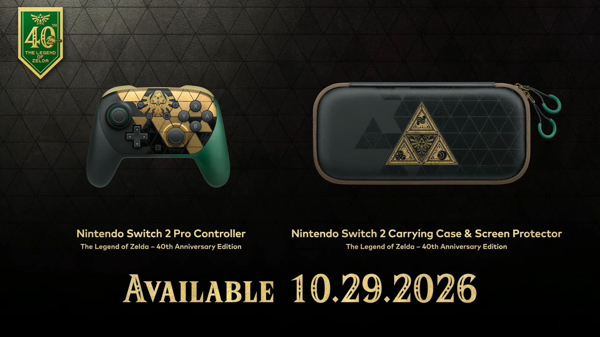

ZELDA
Lindo! Nintendo Switch 2 com tema de Zelda é revelado
A Nintendo surpreende os fãs com um novo console temático de Zelda, trazendo nostalgia e inovação para os jogadores.
Por Potato News
08 de setembro de 2026

Após revelar detalhes da jogabilidade de The Legend of Zelda: Ocarina of Time Remake, a Nintendo ainda tinha mais novidades preparadas para os fãs. Depois de alguns vazamentos, a empresa confirmou oficialmente uma edição especial do Nintendo Switch 2 com o tema franquia.
